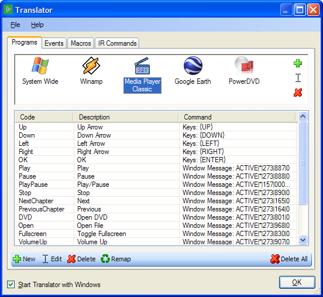

What Is Translator?
Translator is a small application that loads into the System Tray and can be used to control the entire PC.
Translator converts input into actions depending on what application has focus.
Command Line Parameters
When using Translator to control your PC you can call the program with command line parameters to perform certain tasks.
- -blast [IR Command] [Port]
Request an IR command be blast to the specified port.
- -macro [Macro]
Execute the given macro.
- -eject [Drive]
Eject the supplied optical drive.
- -shutdown
Request a system shutdown.
- -reboot
Request system reboot.
- -standby
Request system standby.
- -hibernate
Request system enter hibernation.
- -logoff
Request a user log off.
- -osd
Display the Translator On-Screen Display.
- -channel [Number] [Padding] [Port]
Blast a series of IR Commands contained within the given channel number.
Use the padding value to specify the minimum size of the channel number.
All blasting will be performed on the specified port.
Translator must already be running for command line parameters to be acted on.
